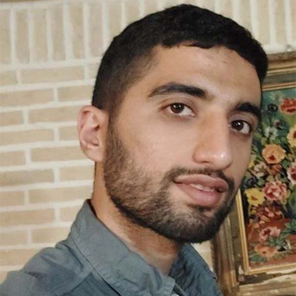
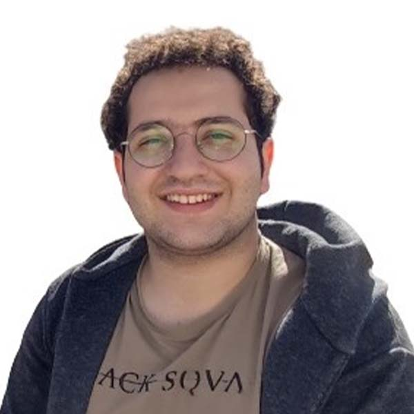
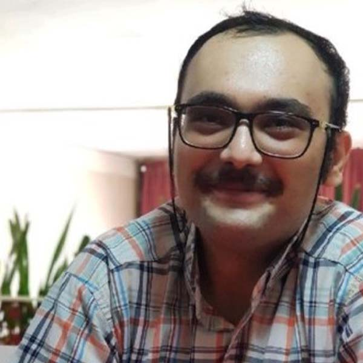
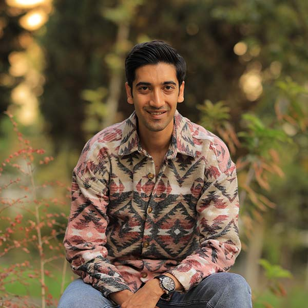
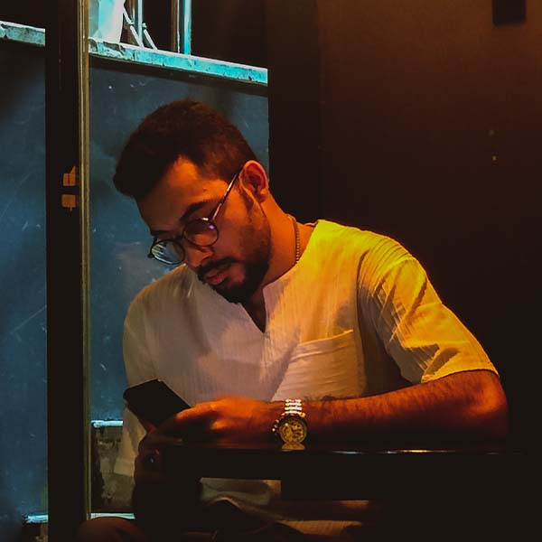

Students
-

Ali Fatemi Mofrad successfully achieved his B.Sc. degree with highest honors in electrical engineering from Sharif University of Technology (SUT), Tehran, Iran, in 2021. He also completed his master's degree at SUT in 2023, having a primary focus on research related to low-power vector modulators and multi-phase clock generation networks. He is currently working toward his PhD degree at SUT.
-

Hamidreza Rahimi received his B.Sc. degree in electrical engineering from Sharif University of Technology (SUT), Tehran, Iran, in 2021. Subsequently, he continued his academic journey by pursuing a master's degree at SUT, with a research emphasis on wearable technology. Having successfully completed his master's degree, he is now actively seeking a PhD position abroad.
-
Aref Shahidani received his B.Sc. degree in electrical engineering from Isfahan University of technology, Isfahan, Iran, in 2021. In the same year, he joined Sharif University of Technology and became a part of SHINE, where he is actively engaged in research focusing on ultra-low-power ZTC oscillators.
-

Masoud Masoumizadeh successfully obtained his B.Sc. degree with honors in electrical engineering from Sharif University of Technology (SUT), Tehran, Iran, in 2021. Subsequently, he has worked on his master's degree at SUT, where his primary research is on self-interference cancellation in FMCW radar systems.
-

Reza Jafarpour earned his B.Sc. degree in electrical engineering from Sepahan Institute of Science and Technology, Isfahan, Iran, in 2015. He joined Sharif University of Technology and became a member of SHINE in 2022. His research is focused on low-power harmonic rejection mixers.
-

Amir Ahmad Isazadeh joined the SHINE group in 2021. He completed his B.S. in electrical engineering from Sharif University of Technology, Tehran, Iran in 2023. He is now continuing his research with the group to pursue a master’s degree.
-

Mohammad Reza Fallah obtained his B.Sc. degree in electrical engineering, specialized in microwave circuits and photonics, from Sharif University of Technology, Tehran, Iran, in 2023. He has recently become a member of the SHINE group to further his academic journey and pursue a master’s degree in Electronics.
-

Amir Sohrab Shabrang became a part of the SHINE group in 2021. He successfully obtained his B.S. degree in electrical engineering from Sharif University of Technology, Tehran, Iran, in 2023. Currently, he is actively engaged in research within the group, working towards his master's degree.
-

Mohammad Hossein Tazari joined the SHINE group in 2021. In 2023, he completed his B.S. degree in electrical engineering from Sharif University of Technology, Tehran, Iran. He is now dedicated to conducting ongoing research within the group as he works towards his master's degree.